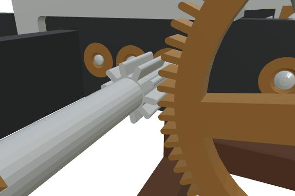
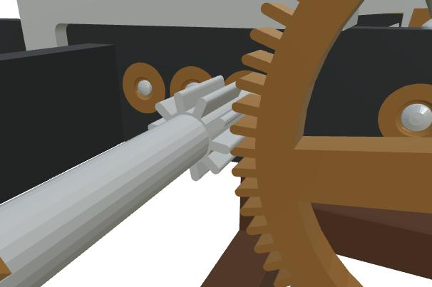
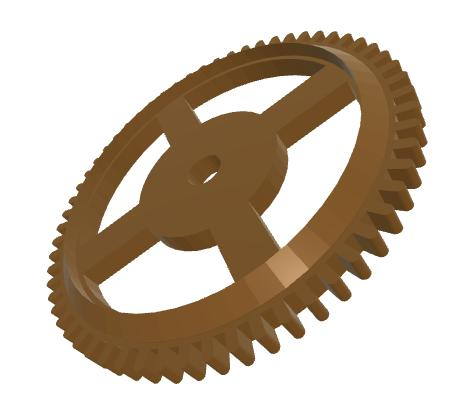
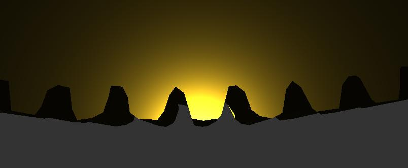
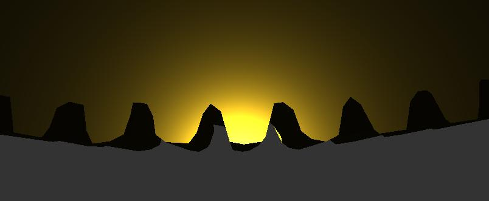
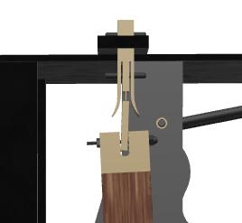
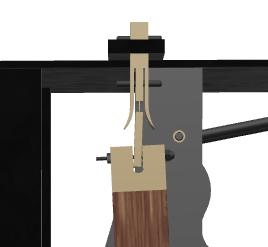

The Chronospédia project
Truths and lies
(French version)
Disclaimer: This site does not endorse any employer and is established
by an independent researcher. It contains constructive criticism
and is in no way intended to denigrate.
Restoring the truth is not denigrating; it is the researcher's duty.
Beavers make beautiful dams, but destroy forests.
The Chronospédia project
by F. Simon-Fustier and K. Protassov
is a project developed from a 3D modeling activity
of tower clocks carried out since around 2012
by Mr. Simon-Fustier's workshop
in the suburbs of Lyon and developed through
the modeling of the horizontal clock in the Encyclopédie
of Diderot and d'Alembert, the tower clock of the
Vaux-le-Vicomte castle, the electromechanical clock
of city hall of Cluses, the large carillon clocks
of the Mafra Palace, and several others.
This project was expanded in 2020 under the leadership of K. Protassov
and now aims to preserve horological know-how,
mainly with regard to clocks, by relying
on 3D, but also by integrating a number of other types
of data.
That said, the primary motivation of the project does not appear
to be heritage, nor heritage research, since the project leaders
have never conducted systematic horological inventory work,
nor published research on the history of horology
or horological technology. It seems that heritage and 3D
are rather part
of an expansion strategy and correspond above all to an economic model.
Having followed the project since 2015, I have been led to adopt
a rather critical attitude towards it, particularly because of the
dangers it represents for real priorities in terms of horological heritage,
and because of the project's authors' lack of perspective on 3D.
In a previous version of this site, I analyzed the project's problems
from several angles, but it seems to me that my
analyses were misunderstood. I had intended to produce short analyses
over a few pages, but this increased their number,
perhaps hindering their readability.
I therefore decided to be more concise, in the hope of being better understood.
I'll summarize in a few words what I consider to be
the considerable danger posed by Chronospédia:
- The project is not open source, and the 3D models are not accessible
in source format (SolidWorks), nor even in STEP exchange format,
and may never be, contrary to what is
claimed here
in 2022.
- There appears to be no scientific supervision, no certification
of the models, no way to verify the work done by the project.
- The project appears to have achieved absolutely nothing
to safeguard horological know-how; no archive of clocks, no restoration
reports, not even technical documentation of a clock restored
by the project has been posted online.
- The focus on 3D means that the entire inventory
of horological heritage is currently neglected, and that this heritage, already
in great danger (the French heritage administration
is doing nothing for it), will deteriorate further.
- The Chronospédia project's achievements do not seem to include any researchers
in technical horology. There are none on the steering committee.
There is even only one clock restorer in the entire steering committee.
As a result, there is no guarantee of scientific quality
in this project, and no serious researcher will use the project's models,
or even the unsourced and unsubstantiated "recipes" given on the site. Some enthusiasts
or museums may find it interesting, but not someone
doing serious research.
- Furthermore, 3D is approached in a simplistic manner, with the project leading
to the belief that there is 3D expertise, when this "expertise"
is limited to the presence of a few people on the project with experience
with software like SolidWorks. 3D is much more than that!
- The project is also based on questionable rhetoric,
and in particular on inaccurate claims about the first 3D projects
for clocks, which do not come from Chronospédia
(nor from me, for that matter), or on the lack of recent resources
for horology, which is false.
- Finally, the project does not take into account the needs
of researchers and acts as if it brings together all research knowledge. However, the authors of Chronospédia have no publications to their credit
in horology, apart from an (anonymous) presentation of the project in
the AFAHA journal. In particular, they have never published
the slightest technical description of a clock.
One consequence of the above observations is that
Chronospédia's work is not sustainable and, in particular,
that the various models will one day have to be redone,
in order to make them truly open and subject them
to criticism by the scientific community.
More specifically, Chronospédia's 3D models are not error-free
and would benefit from greater openness. I'll give
a few examples to demonstrate this. These observations are based
on the August 2025 Chronospédia update, which still
does not offer the source files for the 3D models.
- In the model of the clock described in the Encyclopédie of Diderot
and d'Alembert (https://www.chronospedia.com/s/chronospedia/item/13665), which dates
from 2015, we can notice, among other things, that certain wheels mesh poorly
(for example, the teeth of the escape wheel pinion):
 

In the above views, the left pinion (of the escape wheel)
is not in contact with the right wheel at all, although it should be.
But it also appears that bevel gears like these

are poorly constructed,
the teeth being simply attached to a cone, without the wheel
having actually been constructed with its teeth. The wheel without the teeth is

and the individual teeth look like

This problem may not be very visible at first glance,
but the August 2025 release finally confirms
these approximations. However, they are understandable,
because building a bevel gear is not easy.
It should be noted that this type of gluing construction
was still used in an Odobey clock modeled around 2023.
It is possible to do better. Making
the SolidWorks sources available to everyone (and not just the project
partners) would allow others to fill in the gaps
in the models.
By carefully observing bevel gears, like the following one,

we also see that they do not perfectly conform
to those of the Encyclopédie. The Chronospedia team gave
the previous gear a cylindrical exterior profile, even though there is no
such profile in the Encyclopédie plates and nothing prevented
it from sticking to the Encyclopédie's description.

Furthermore, throughout the model, strange screws with split bulb heads were used,

even though they are not present
in the plates. The screws visible in the above excerpt have hexagonal heads.
- Examining the Chronospédia models, or at least the degraded versions
(glTF = degraded version) online, we clearly see a rapid evolution
in the expertise of the Chronospédia team, something that could not easily
be discerned before the August 9, 2025 update of Chronospédia.
It is only since this date that we can better examine
the models of the clock in the Encyclopédie and that of the castle of
Vaux-le-Vicomte.
For example, at Vaux-le-Vicomte, we note the great care taken
in the design of the parts, an effort at faithfulness, and also the use
of textures, absent from the Encyclopédie model.
In the Encyclopédie model, the screws did not have threads,
but at Vaux-le-Vicomte they do. The bevel gears are better constructed,
as are many other parts. Things are not perfect,
though. The bearings of the last shaft,
for example, have one of the holes that is not centered. It is understandable
that this hole was not centered at Vaux-le-Vicomte, due to the bushing
(not modeled!), but the theoretical position
of the hole should have been at the center.
On other clocks of the same type, it is centered.
This obviously raises the question of the faithfulness of the model.
Should a model represent the work as it should have been,
or as it is, after decades of maintenance?
Perhaps both models should be made.

The loss of quality of online models is visible on certain parts,
for example with this knob:
 

On the left, everything looks perfect, but if you look closely at rim
(detail on the right, they are not teeth), you can see that there are many
irregularities. The "teeth" are all different.
Although the model is from 2015, this problem is very recent, since it
results from the transformation of the SolidWorks model into glTF.
This is why we can say that the glTF models are degraded. This problem is not
a mere detail and could have been avoided, but if no one
looks closely at the models, and, more importantly, if no one can
look closely at the models, problems like this are likely never
to be solved.

- In the Comtoise tower clock model
(https://www.chronospedia.com/s/chronospedia/item/13672), a model created around 2024, the pendulum appears to be incorrectly suspended. This can be seen by
comparing the following two views of the animation:
 

Not only does the lower stem swing around a point that's far
too low, but the lower attachment element
of the suspension blade is mobile relative to the stem,
when it should be fixed... This kind of approximation is
not very worthy of a clock restorer!
- There are undoubtedly other problems, but I only took a
quick look at the models posted online
in August 2025.
Although the Chronospédia team quickly perfected
its SolidWorks skills, the Odobey clock
in La Mure, as well as the Odobey Comtoise tower clock,
both modeled much more recently, still have problems.
All these problems can be corrected, but for this to happen,
more openness is needed; the complete models
(SolidWorks and STEP) must be fully publicly accessible,
without restrictions. The community will then be able to participate
in the in-depth review of the models, in discussions about them,
and in their refinement, which is not currently possible.
To further provide context for the use of 3D
in Chronospédia, which is nothing new, the following pieces may
be of interest:
The content of this page is regularly updated.
D. Roegel
Last modified: September 13, 2025.